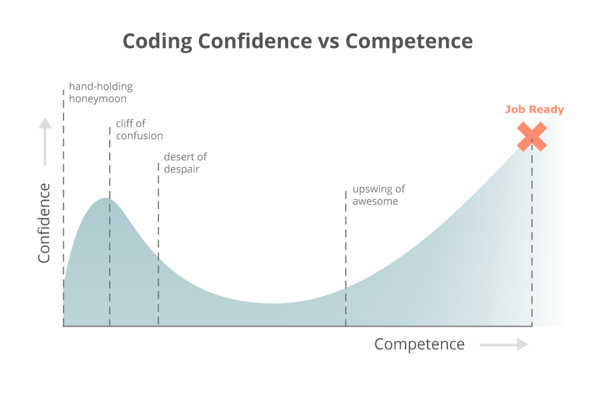

Functions
A place where you can store a chunk of code when called or 'invoked.' Functions are convenient because they can be reused for different values as many times as needed.
Syntax: A JavaScript function is declared with the function keyword, followed by a name, followed by parentheses ( ).
Function names can contain letters, digits, underscores, and dollar signs (same rules as variables).
The parentheses may include parameter names separated by commas: (parameter1, parameter2, ...)
The code to be executed, by the function, is placed inside curly brackets: { }
Parameters:
Function parameters are listed inside the parentheses ( ) in the function definition.
Function arguments are the values received by the function when it is invoked.
Inside the function, the arguments (the parameters) behave as local variables.
Expressions: Functions can be used the same way as you use variables, in all types of formulas, assignments, and calculations. You can set a variable equal to a function.
var hey = function hi() {
console.log('HI') }
Scope: Variables declared within a JavaScript function, become LOCAL to the function. Local variables can only be accessed from within the function. Global variables can be accessed from outside the function.
var x = 12;
function scope( ) { <-- Declare the function
var x = 33;
console.log(x);
}
scope( ); // you will get 33 (the local variable) <-- Call the function
console.log(x); // you will get 12 (the global variable)
Here's a great resource: W3 Schools
Objects
All javascript values, except primitives, are objects. Javascript has five types of primitive data: string, number, boolean (true or false), null, undefined. Primitive values are hardcoded and therefore cannot be changed. Objects are variables, but can contain many values. The values are writen like name: value pairs. A javascript object is a collection of named values
let person = {firstName: "John", lastName: "Doe", age: 55, eyeColor: "blue"};
Properties: The named values in objects are called properties and methods. Properties are the second value in the object pairs from the example above. Methods are pre-built functions that manipulate data for us. Unassigned properties of an object will return undefined and not null or as an error.
Literals: The easiest way to create an object is with a literal. In a literal, you both define and create an object in one statement. Our example from above illustrates the syntax.
Dot and Bracket Notation: The easiest and most common way to refer to properties is dot notation. You can access properties on an object by specifying the name of the object, followed by a dot (period) followed by the property name. This is the syntax: objectName.propertyName;
In bracket notation, we can access the object properties like this: objectName [ "propertyName" ]; There are fewer limitations with bracket notation because our prperty identifiers can include any characters, as well as variables. They only have to be a string. In the example below, bracket notation is used to pass in variables:
let obj = { cat: 'meow', dog: 'woof' };
let dog = 'cat';
let sound = obj[dog];
console.log(sound); // meow
Here's some great resources: W3 Schools, Codeburst
Learning Javascript is HARD
"Here's the problem -- you're in what I like to call the "Hand Holding Honeymoon" phase. Though you may feel like the end is around the corner, you're only a fraction of the way there. This is just the beginning..."
Click here to see what happens next!

Arrays
Arrays are containers that hold lists of items. To write an array, first declare the name and then list the items inside square brackets, separated by commas.
let food = ['Pecan pie', 'Shrimp', 'Quesadilla', 'Cheesecake', 'Hotdog'];
for (f in food) {
console.log(food[f]) }
You can access an element of an array by referring to the index number. The index starts at [0]. In an array there are a number of ways to add new elements, replace elements, and and take elements away.
food.push('Pizza'); //pushes a new string to the array
food.splice(1, 1, 'Bananas') // in this example we look at index of 1, ask how many you want to cut? (In this case 1), and what you want to insert? ("Bananas")
console.log(food); // [ 'Pecan pie', 'Bananas', 'Quesadilla', 'Cheesecake', 'Hotdog' ]
food.pop(); // remove item from the end
Further reading: JavaScript.Info
For Loops
For loops can run the same block of code over and over again, each time with a different value. They consist of three statments: Statement 1 is executed (one time) before the execution of the code block. Statement 2 defines the condition for executing the code block. Statement 3 is executed (every time) after the code block has been executed.
for ( var i = 1 /*variable/index section*/ ; i <= 10 /*conditional section*/ ;i++ /*increment section*/ ) {
console.log("Number:", i); }
You can initiate many values in statement one:
for (i = 0, len = cars.length, text = ""; i < len; i++) { text += cars[i] + "< xr >"; }
And the statements can be optional if you declare your variables elsewhere:
var i = 0;
var len = cars.length;
for (; i < len; ) { < xr >
text += cars[i] + "< xr >";
i++; }
Conditionals
You can use conditional statements in your code to perform different actions based on different decisions.
In JavaScript we have the following conditional statements:
If: Use if to specify a block of code to be executed, if a specified condition is true
if (condition) {
// block of code to be executed if the condition is true
}
Else: Use else to specify a block of code to be executed, if the same condition is false
if (condition) {
// block of code to be executed if the condition is true
} else {
// block of code to be executed if the condition is false
}
Else If: Use else if to specify a new condition to test, if the first condition is false
if (condition1) {
// block of code to be executed if condition1 is true
} else if (condition2) {
// block of code to be executed if the condition1 is false and condition2 is true
} else {
// block of code to be executed if the condition1 is false and condition2 is false
}
Switch: Use switch to specify many alternative blocks of code to be executed. The switch expression is evaluated once.
The value of the expression is compared with the values of each case.
If there is a match, the associated block of code is executed.
switch (dessert) {
case 'Pie':
console.log('Pie pie me oh my');
break;
case 'Cake':
console.log('Cake is great');
break;
case 'Ice cream':
console.log('I scream for ice cream');
break;
default:
console.log('Not on the menu');